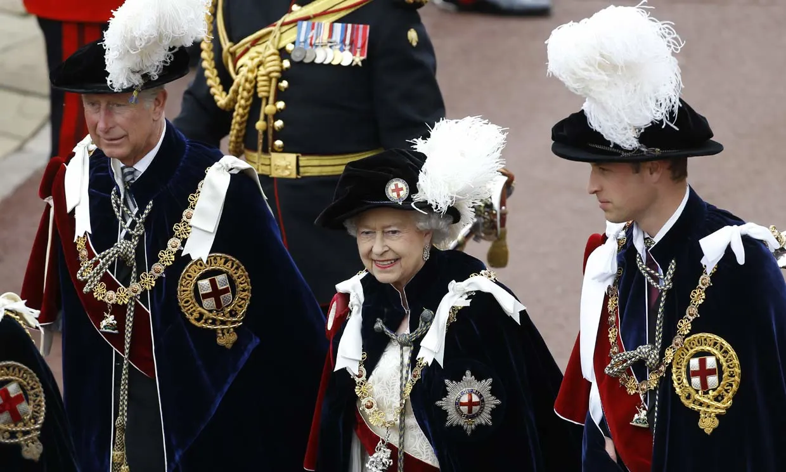
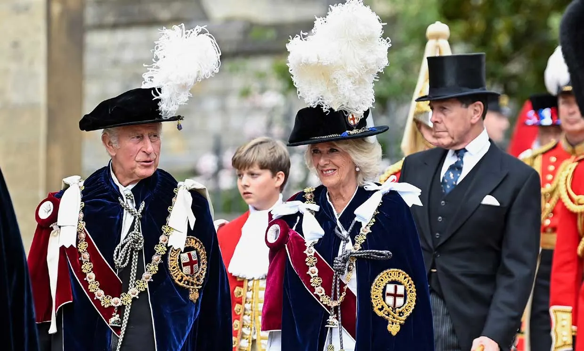

La Nobilísima Orden de la Jarretera es la orden de caballería más antigua del Reino Unido, y la primera en el orden de precedencias de las condecoraciones y distinciones que se otorgan en ese país. La fundó el rey Eduardo III, un día de San Jorge de 1348, aunque se desconoce el verdadero motivo de su fundación, ya que no se conserva ningún escrito que lo documente. La leyenda cuenta que nació cuando el monarca estaba bailando en una fiesta con la condesa de Salisbury y le anudó en la pierna una liga azul que se le había desprendido. Ante los murmullos que esto despertó en la corte, el rey pronunció la frase en latín que habría de convertirse en el lema de la orden ("Que la vergüenza caiga sobre aquel que piense mal"), aunque también hay quien apunta que solo fue una forma de legitimar sus aspiraciones sobre el trono de Francia o que fue creada para intentar replicar la épica de los Caballeros de la Mesa Redonda.
El patrón de la Orden es San Jorge, elegido por ser santo patrón de los soldados, y también de Inglaterra. El monarca británico es el Soberano de la Orden, y el hogar espiritual se encuentra ubicada en la Capilla de San Jorge del Castillo de Windsor. De acuerdo con los orígenes de la Orden, el nombramiento como miembro de la orden es un "favor real" que otorga el monarca para honrar a aquellos que hayan contribuido de manera particular al bien de la vida del país, o que le hayan servido personalmente. No obstante, entre los siglos XVIII y el año 1946, el nombramiento como miembro de la Orden se realizaba a indicación del gobierno.
Forman parte de la Orden, el monarca y el príncipe de Gales como miembros ex officio, y como máximo veinticuatro caballeros o damas que, aunque durante muchos años formaron parte de la aristocracia, actualmente proceden de diferentes estamentos sociales. Debido a la limitación del número de miembros, para que se produzcan nuevos nombramientos debe producirse una vacante, y su anuncio se realiza el día 23 de abril, día de San Jorge.
La pertenencia a la Orden tiene carácter vitalicio, pero se contempla la posibilidad de ser expulsado por cometer delitos de herejía, traición o cobardía. Tras el fallecimiento de uno de los miembros las insignias se deben retornar al Soberano de la Orden, aunque se pueden utilizar durante el funeral, tal y como pudimos ver durante el sepelio de la ex primera ministra baronesa Margaret Thatcher, que había recibido el honor de formar parte de la Orden. Los miembros están autorizados a usar las siglas KG o LG a continuación del tratamiento y el nombre.
